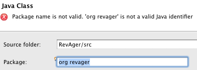
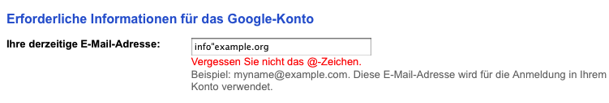

| Usability Pattern | Live Validation |
|---|---|
| Problem | When users freely enter data that needs to meet certain validation criteria (e.g. correct format, valid spelling), they want quick feedback if the data is valid or not. |
| Lösung |
Validate input data “live” while users are typing, and unobtrusively show the validation result. If validation takes time, validate input data when users have finished their input into the particular input field (e.g. when the focus is on the next input field). In any case, validation should start automatically without explicit user action. Immediately show if the input data is valid or not. Use symbols or messages that are clear and easily understandable. If the input data is not valid, give users a hint on how to correct their input. |
| Beispiele |
Eclipse IDE: New Java class dialog When the user enters an invalid Java package name in the dialogue, Eclipse immediately shows a warning.  Live Validation in Eclipse Google.com: Create a new Google account When the user enters an invalid e-mail address, Google.com immediately notifies the user and shows a hint. In the example screenshot, Google.com reminds the user that e-mail addresses must contain an @ symbol.  Live Validation at Google.com |
| Nutzungskontext |
|
| Begründung |
Live Validation assists users in entering valid input data. Users can easily recognize if their inputs are invalid and, if necessary, correct them according to the given hints. Live Validation thus improves the self-descriptiveness of the system. |
| Anforderungserhebung |
Identify user inputs that have to meet certain format or content-related criteria.
Define when validation should take place.
|
| Anforderungsspezifikation |
Spezifiziere globale Vorgaben für den Einsatz des Usability Patterns „ Live Validation “:
Spezifiziere, für welche Interaktionen das Usability Pattern „ Live Validation “ eingesetzt wird. Annotiere und ergänze dazu vorhandene Use Cases :
|
{kind=link}
{kind=link}